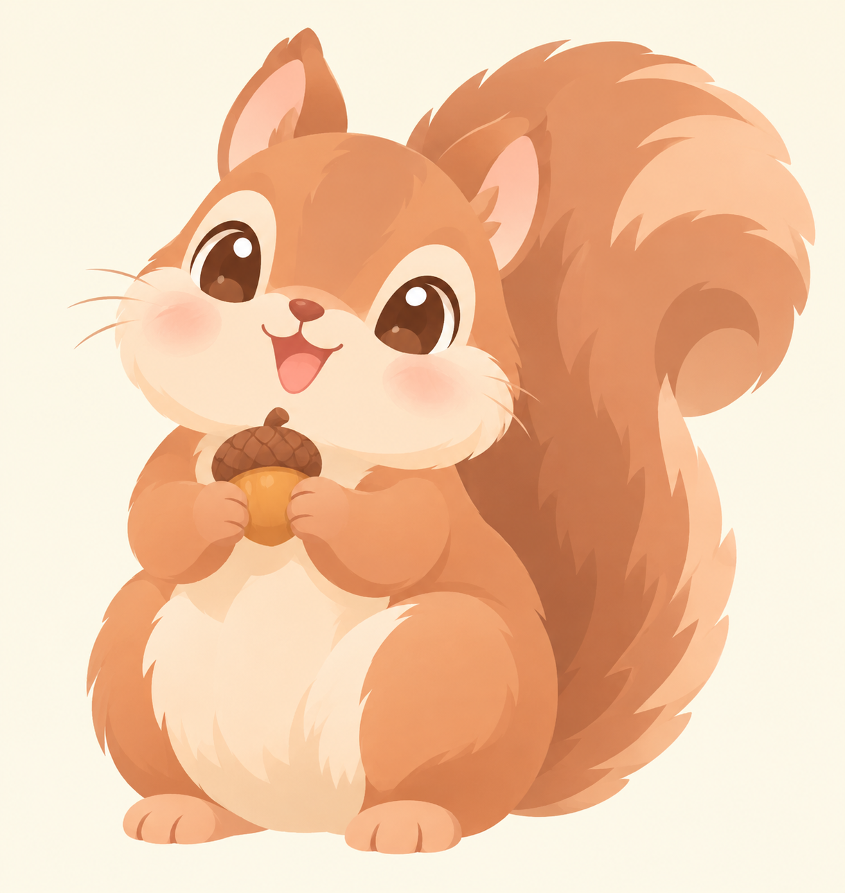
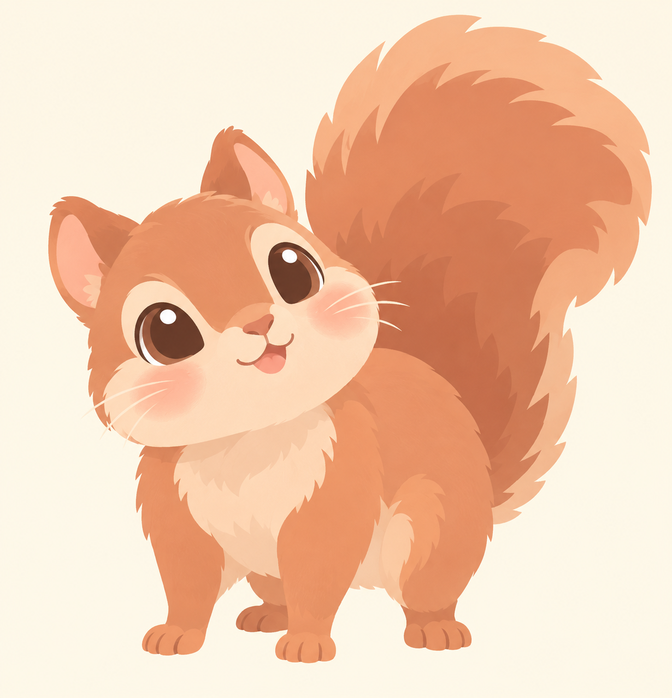
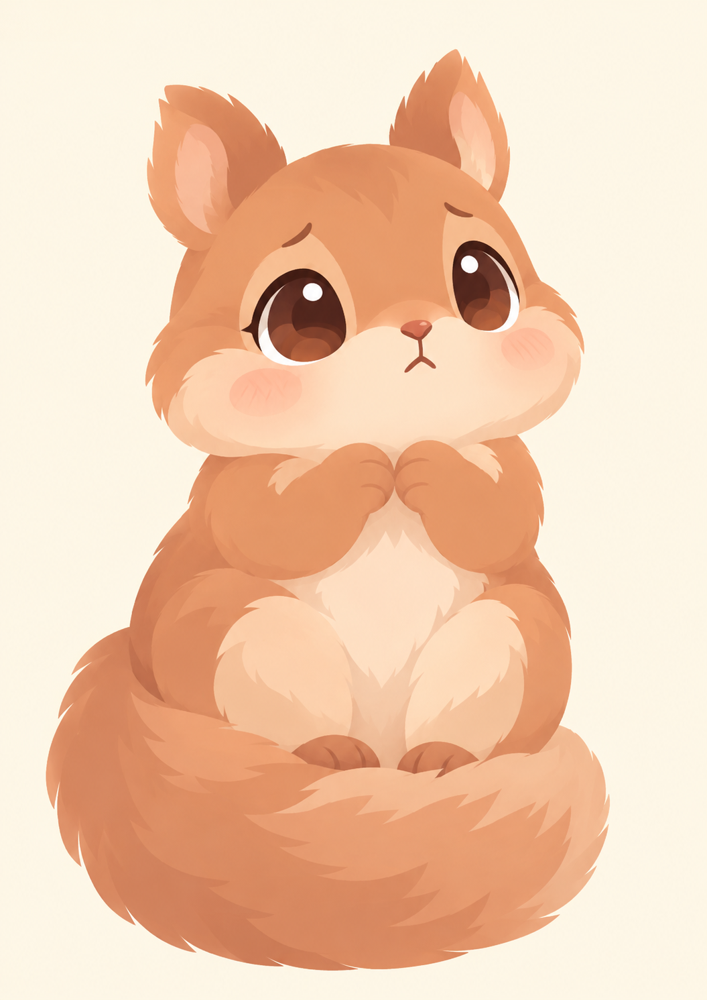
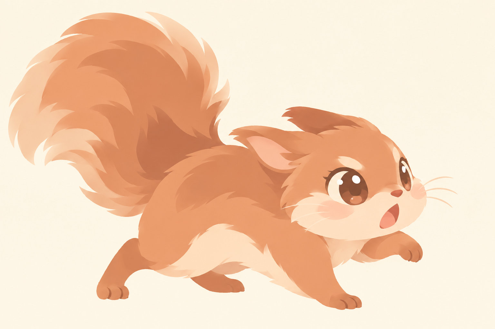

동물다운 다람쥐 캐릭터 시안
옷과 소품, 사람 같은 손동작을 뺐습니다. 다람쥐 본래의 몸과 자세로 귀여움을 보여 주는 방향입니다.

뒷다리로 앉고 도토리를 두 발로 쥠. 가장 다람쥐답다.

고개를 살짝 기울인 기본 자세. 가장 중립적.

발을 가슴에 모으고 꼬리로 발을 감음. 파산 직전 연출에 맞음.

낮게 웅크린 자세, 귀를 뒤로 젖힘. 추심을 피해 도망치는 장면용.
고르실 때 볼 점: 동물 특유의 귀여움이 나는지, 사람 같은 표정이 과하지 않은지, 작은 화면에서 누구인지 알아보는지.
하나 고르면 그 자세를 기본형으로 정하고, 표정 5종을 같은 몸으로 다시 뽑겠습니다.